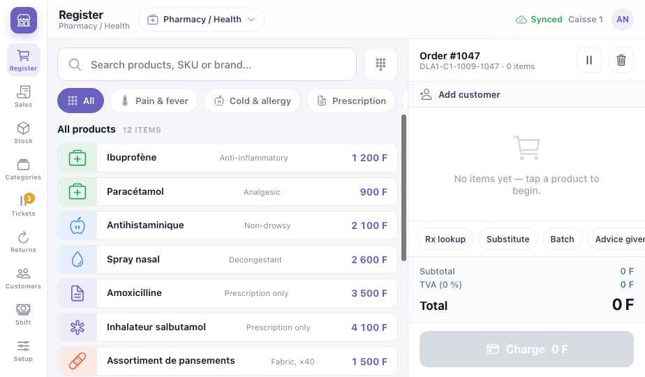
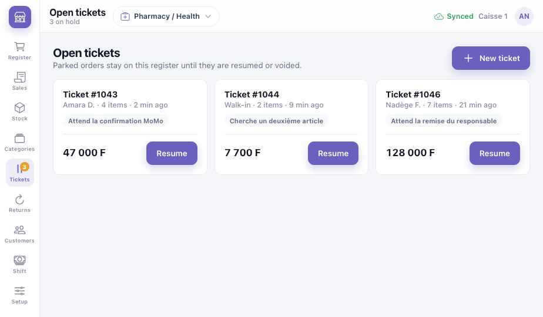
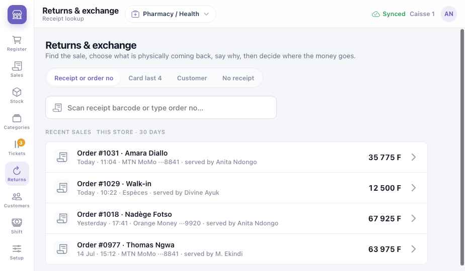
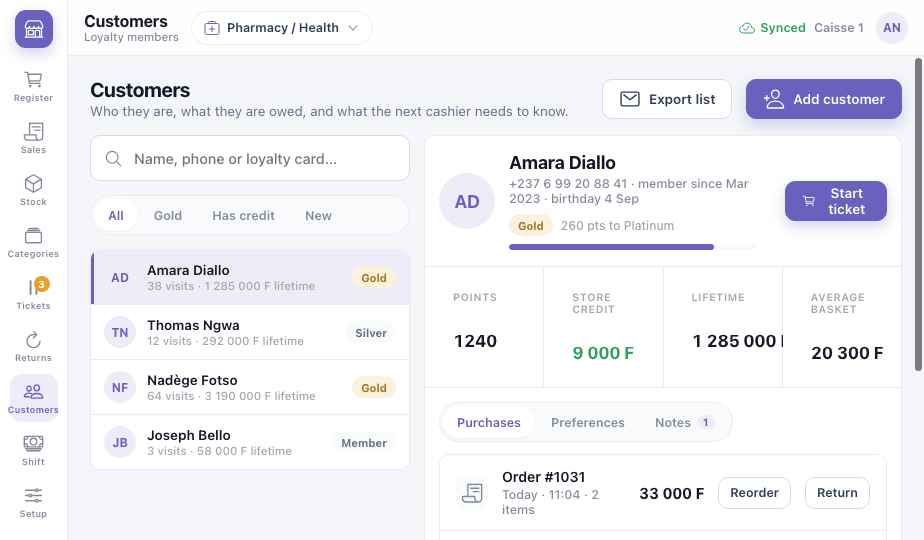
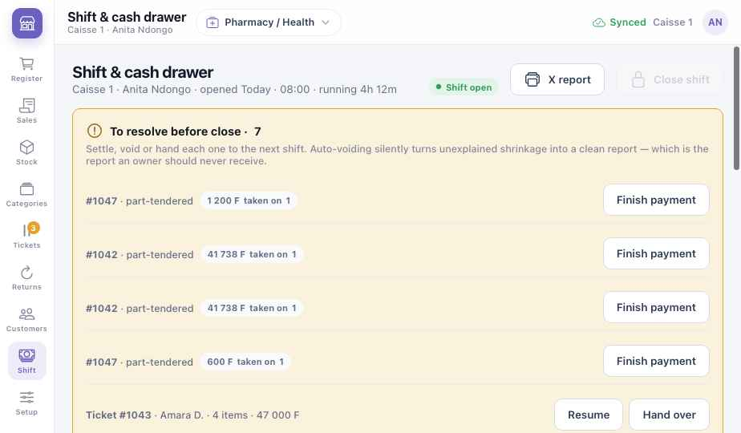
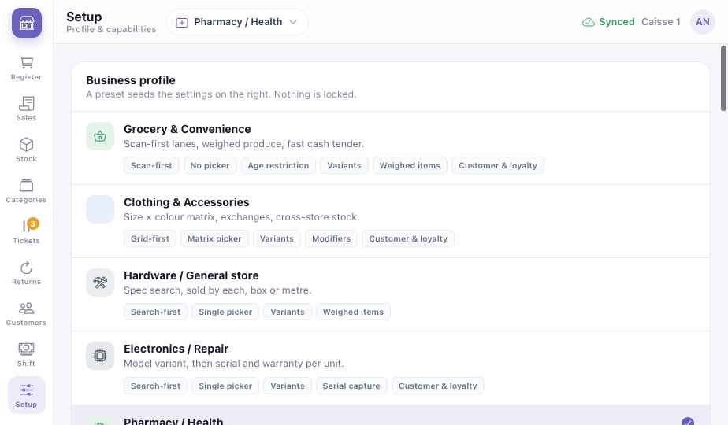

Module guide
Retail Flex
One register that takes the shape of your shop — scan-first for a supermarket, search-first for a pharmacy or a hardware store, picture tiles for beauty and salon products. Shared chapters — devices, offline, payments — are in the Platform chapters.
Retail Flex · Part 1
Is this for me?
Retail Flex is for any shop that sells goods over a counter. Setup offers a starting shape — a preset — for each kind of shop. A preset only sets defaults; nothing is locked.
Scan first, weighed produce, fast cash. Alimentation, supérette, kiosque.
Search by spec; sell by each, box or metre. Quincaillerie.
Model, then serial number and warranty for each unit.
Strength, form and pack; prescription sign-off; batch and expiry.
Products sold at the chair, linked to the stylist.
Weighed counter sales with tare; sliced or whole.
Shade ranges as swatches, searchable by shade code.
What you get at each level
LiteSell
- Register: scan, search or tap
- Cash, MoMo, Orange Money, split
- Sales history and reprints
- Stock per product
MidThe shop's daily loop
- Categories and tiles
- Open tickets: park a sale
- Returns and exchanges
- Customers and loyalty
- Send a line to a counter that prepares it
FullControl the cash
- Shift and cash drawer, X and Z reports
- Manager approval above a discount
- Several registers in one shop
Same register, seven shops
Watch one register change shape with the preset. The entry mode, what the cashier is asked to pick, and the quick keys change — the way of selling stays the same.
- Grocery & Convenience — Scan-first lanes, weighed produce, fast cash.
- Hardware / General store — Spec search; sold by each, box or metre.
- Electronics / Repair — Model variant, then serial and warranty per unit.
- Pharmacy / Health — Strength × form × pack, Rx sign-off, batch and expiry.
- Salon retail add-ons — Size sheet on image tiles, attached to a stylist.
- Bakery / Deli — Weighed counter sales with tare; cut style as a modifier.
- Beauty & Cosmetics — Deep shade ranges as swatches, searchable by shade code.
Retail Flex · Part 2
Set up Lite
About an hour for a small shop. Longer if you have thousands of items — import them from a spreadsheet.
- Getting startedAccount, location and staff — see P1. Cashiers get the Staff role: no Setup.
- Choose a presetSetup → Business profile. Pick the closest shop type; you can change any setting afterwards.
- Add your itemsName, price, barcode if any, category. Variants where you need them — size, strength, shade. Stock is in Inventory.
- TaxesVAT 19.25 % by default; basic foods and medicines can be zero-rated.
- PaymentsCash on; add MTN MoMo and Orange Money with your merchant numbers.
- HardwareA Bluetooth or USB barcode scanner and a receipt printer. A scale for weighed goods.
Scales — available soon - Do a test saleScan, pay by cash and MoMo, return one item, look at the sale in history.
Retail Flex · Part 3
Run the day
The real order of a shop day, and which screen you use for each moment.
| Moment | What you do | Screen | Tier |
|---|---|---|---|
| Opening | Open the shift and count the float into the drawer. | Shift | Full |
| A customer at the counter | Scan, search or tap the items. Quick keys for the shop's usual extras. | Register | Lite |
| They step away | Park the sale with a reason; serve the next person; resume it later. | Open tickets | Mid |
| Payment | Cash with change, MoMo or Orange Money, or split between them. | Register | Lite |
| A regular | Add the customer: points, store credit, notes for the next cashier. | Customers | Mid |
| A return | Find the sale, choose what comes back and why, refund or exchange. | Returns | Mid |
| A big discount | Above the threshold, a manager approves with their PIN. | Register | Full |
| Closing | Resolve open payments and parked tickets, count the drawer, close the shift — the Z report. | Shift | Full |
Retail Flex · Part 4
Screens
The left rail: Register, Sales, Stock, Categories, Tickets, Returns, Customers, Shift, and Setup at the bottom. The screenshots show the Pharmacy preset at Caisse 1.
Register Lite

123456789- Preset — the shop type this register is shaped for.
- Search or scan — by name, SKU, brand or barcode.
- Categories — your own, in the order the shop sells.
- Items — tap to add. Prescription-only items ask for sign-off.
- Add customer — points and store credit. Mid
- Quick keys — the preset's usual extras (here: Rx lookup, Substitute, Batch, Advice given).
- Park or clear — park the sale as an open ticket, or clear it. Mid
- Charge — cash, MoMo, Orange Money or split.
- Sync light — see P3.
Open tickets Mid

12345- Badge — how many sales are waiting.
- Ticket — who, how many items, how long ago.
- Why it's parked — waiting for MoMo, looking for a second item, waiting for the manager.
- Resume — back on the register exactly as it was.
- New ticket — start another sale while one waits.
Returns & exchange Mid

1234- Find the sale — receipt number, card last 4, customer, or no receipt.
- Scan the receipt barcode, or type the order number.
- Recent sales — with how they were paid and who served.
- Open it — tick what comes back, give the reason, then refund to the same method, store credit, or exchange.
Customers Mid

123456- Find by name, phone or loyalty card.
- Filters — Gold members, customers with store credit, new.
- Loyalty level and points to the next one.
- Store credit — from a return, spent at the next sale.
- Start ticket — a sale already linked to this customer.
- Reorder or return straight from a past purchase.
Shift & cash drawer Full

123456- Shift open — who, which till, since when.
- To resolve before close — part-paid sales and parked tickets. Nothing is voided silently.
- Finish payment — collect what is still owed.
- Resume or hand over a parked ticket to the next shift.
- X report — the figures so far, without closing.
- Close shift — count the drawer; the Z report shows any difference.
Setup Lite

123- Business profile — one preset per shop type.
- What it turns on — entry mode, picker, variants, weighed items, loyalty.
- Current preset — ticked. Change it at any time; your items stay.
Retail Flex · Part 5
When something goes wrong
The Z report shows the difference against cash sales. Check part-paid sales and refunds first; the cashier adds a note. The owner sees it the same evening.
Type the code under the bars, or search by name. If the item isn't found, add it from the register and give it its price.
Returns → No receipt. Search by customer or by the item; refund as store credit if your rules ask for it.
The till is right — prices come from one catalogue. Honour the shelf with a line discount and fix the label.
Charge → Split. Take the MoMo first; when it's confirmed, take the rest in cash.
Scanning, cash and parked tickets keep working. MoMo waits; keep the sale parked or take cash.
Retail Flex · Part 6
Go further
Switch these on in Setup when you're ready.
Prepare & send Mid
Send a line to the counter that makes it — the butcher, the bakery oven.
Manager discounts Full
Above a set amount, a manager approves with their PIN.
Several registers Full
Two or more tills in one shop, one stock.
Price screens Mid
Promotions and prices on a TV, read from the till. Signage module.
Shelf labels Full
Print a run of labels after a price change.
Print and pin up
Staff task cards
2. Scan or search → Charge.
3. Customer steps away? Park the sale.
4. MoMo: number → wait for confirm.
5. Close: resolve the list → count → Close shift.
2. Tick what comes back → reason.
3. Same method, store credit or exchange.
4. Put the item back on the shelf or aside.
2. X report at midday.
3. Check the Z report and any difference.
4. Wait for Synced before closing up.
Koomzo User Guide · Retail Flex · Version 2 · Screens shown are from the current Koomzo prototype. Names, items and prices are examples.